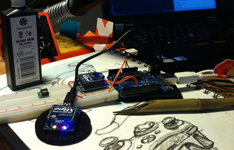
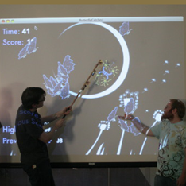
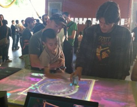
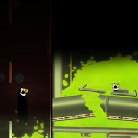

I'm an avid tinkerer and maker. I've always got a side project or two on the workbench or on the computer (usually both) and a bunch more on my idea wall and in my sketchbook. I'm also an avid game jammer. Game jams are events where teams or individuals create a game in 48 hours (or less!) based on a theme announced at the beginning of the event.
Flutter was a 24 hour jam project revolving around the idea of building a large scale gallery installation. I designed and implemented an infrared tracking solution for following a player with an IR enabled butterfly net. Players could swing the net to collect butterflies and score points. The team later turned Flutter into a full multiplayer interactive art piece for SCAD Atlanta's "Open Studio" gallery show. Two players would wave their nets to turn butterflies to their color, changing the landscape of the projection.
The work we did on Flutter led directly to my team's work developing Black Bottom Parade. BBP is a public game installation on display at SCAD's Atlanta and Hong Kong campuses. It was also a finalist at the 2011 IndieCade international independent games festival and took Best in Show at the 2011 Entelechy competition. SCAD commissioned Black Bottom Parade to be a show piece in the lobby of their new Sham Shui Po campus in Hong Kong. The team developed the project from start to finish in 3 weeks spent on site.
For my part on BBP I designed and helped construct the interactive table, the table's infra-red controllers, designed UI flows, and wrote the interface between our blob tracking package and the game. We utilized Community Core Vision and the TUIO Flash libraries to handle much of that. I also worked with our lead game designer to help tune the game and pivot our mechanics based on playtest feedback.
Maru, was my entry for the 23rd Ludum Dare 48 hour competition. The theme was Tiny Worlds. Ludum Dare is a solo competition where you can't bring anything in ahead of time (public engines and frameworks allowed) so everything you see there was a product of the 48 hours. It was a ton of fun and I was able to come in #193 overall and #76 in graphics in a field of over 1000 enteries. Maru was created in ActionScript 3 with Flash, Flixel, Photoshop, Illustrator, Audacity, and my Zoom H2 Field Recorder. You can watch a timelapse of Maru here:
My team and I made Radioactive Multiplayer Baby Rocket Racing (RMBRR) in under 48 for the 2011 “What Would Molydeux” game jam. Our prompt for the jam was, “Imagine carrying a radioactive baby in a pitch black environment, your baby would act as a torch. Rocking the baby intensifies the glow etc.” As the design lead I designed our core mechanics and controls, designed and built our UIs, maintained our creative direction and scope. I also programmed a large portion of our controls and flows.

The team included myself, a co-worker from Zynga, Ian Guthridge, and two students, Kelsey Martin and Trevor Adams. Bill Kiley helped us out by creating the great audio tracks in the game.
RMBRR was developed in Flash with Flixel. We're currently working on taking RMBRR and turning into a game installation using wireless accellerometers and pressure pad controlls. More on that soon.